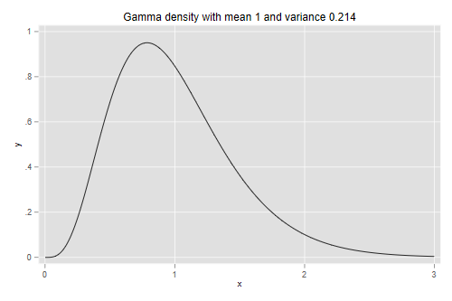
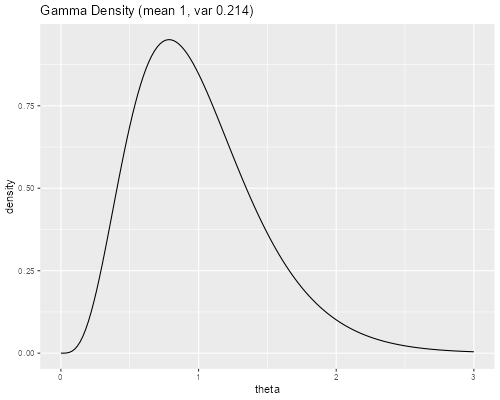

<h2 id="interpretation-of-frailty-models">Interpretation of Frailty
Models</h2>
<p>We continue our discussion of shared frailty models with a focus on
interpretation of the results using various calculations based on the
parameter estimates.</p>
<h3 id="the-distribution-of-frailty">The Distribution of Frailty</h3>
<p>The estimated variance of frailty at the family level is 0.2142. In
terms of Clayton’s model this means that the hazard given that a sibling
died at age <em>a</em> is 21.4% higher than the hazard given that the
sibling survived age to <em>a</em>.</p>
<p>Using the result of Oakes, we can also say that the Tau correlation
between sibling survival times is estimated to be 0.097, so the
probability of a concordant pair is about 10 percentage points higher
than the probability of a discordant pair. (The “pair” here refers to a
pair of mothers, say A and B, each with two children, say 1 and 2. The
pair is concordant if both children of mother A die at younger (or
older) ages than the children of mother B. The pair is discordant if
child 1 of A lives longer than child 1 of B but child 2 of A dies
younger than child 2 of B. The interpretation is not terribly useful in
this application because most observations are censored and thus one
can’t establish concordance or discordance.)</p>

{% include srtabs.html %}

<p>A more direct approach is to look at the actual distribution of
frailty. <span class="stata">Stata has a function
<code>gammaden(a, b, g, x)</code> to compute the density of the gamma
distribution with shape <code>a</code>, scale <code>b</code> (which is
<em>1/ß</em> in our notation) and location <code>g</code> (here
0).</span> <code>b = 1/a</code></span>. <span class="r">R has a function
<code>dgamma(x, shape, rate = 1, scale = 1/rate)</code> to compute the
density of the gamma distribution with given shape and scale (or its
reciprocal the rate).</span> To obtain a distribution with mean 1 and
variance <code>v</code> we set the shape parameter to <code>1/v</code>
and the scale to <code>v</code>.</p>
<pre class='stata'>. scalar v = exp( -1.5407144 )

. twoway function y=gammaden(1/v,v,0,x), range(0 3) ///
>     title("Gamma density with mean 1 and variance 0.214")

. graph export gfr.png, width(500) replace 
file gfr.png saved as PNG format
</pre>
<p></p>
<pre class='r'>> v &lt;- exp( -1.5407144 )
> theta &lt;- seq(0, 3, 0.02) 
> density &lt;- dgamma(theta, shape = 1/v, scale = v)
> gd &lt;- data.frame(theta, density)
> library(ggplot2)
> ggplot(gd, aes(theta, density)) + geom_line() + 
+     ggtitle("Gamma Density (mean 1, var 0.214)")
> ggsave("gfrr.png", width = 500/72, height = 400/72, dpi = 72)
</pre>
<p></p>
<p>We can also compute quantiles. <span class="stata">Stata has a
function <code>invgammap(a, p)</code> to compute quantiles of the
standard gamma distribution with shape <code>a</code>, which has scale 1
and location 0. A gamma with shape <code>a</code> and scale
<code>b</code> is just <code>b</code> times a standard gamma with shape
<code>a</code>.</span> <span class="r">In R we use
<code>qgamma(q, shape, rate = 1, scale = 1/rate, lower.tail = TRUE)</code>
to compute quantiles.</span> So here are the quartiles of the
distribution depicted above.</p>
<pre class='stata'>. mata v = st_numscalar("v")

. mata q = invgammap(1/v, (0.25,.50,.75) )*v

. mata q
                 1             2             3
    ┌───────────────────────────────────────────┐
  1 │  .6618944833   .9295688947   1.261736475  │
    └───────────────────────────────────────────┘

. mata q :/ q[2] :- 1
                  1              2              3
    ┌──────────────────────────────────────────────┐
  1 │  -.2879554307              0    .3573350858  │
    └──────────────────────────────────────────────┘
</pre>
<pre class='r'>> p &lt;- (1:3)/4
> q &lt;- qgamma(p, shape = 1/v, scale = v); q
[1] 0.6618945 0.9295689 1.2617365
> q / q[2] - 1
[1] -0.2879554  0.0000000  0.3573351
</pre>
<p>So the quartiles are 0.66, 0.93 and 1.26. Computing the ratios Q1/Q2
and Q3/Q2, we see that families with frailty at Q1 have 29% lower risk,
and families with frailty at Q3 have 36% higher risk, than families with
median frailty. Clearly, unobserved family characteristics have a very
substantial effect on child survival.</p>
<h3 id="distribution-of-observed-risks">Distribution of Observed
Risks</h3>
<p>It may be interesting to contrast the above results with the risks
that can be attributed to observed characteristics.</p>
<p>At this point we need the results from the piecewise exponential
model with gamma frailty. I saved the file generated in the previous log
as <code>pebleystupp2.dta</code>. We read the file <span
class="stata">and fit the model again.</span> </span> <span
class="r">and then read the parameter estimates from
<code>pebleystupp2.dat</code>.</span></p>
<pre class='stata'>. use https://grodri.github.io/datasets/pebleystupp2, clear 
(Child mortality in Guatemala)

. streg i.dur mage mage2 borde pdead p0014 p1523 p2435 p36up i011a1223 i011a24p 
> i1223a24p , ///
>     dist(exponential) frailty(gamma) shared(momid) nolog

        Failure _d: death
  Analysis time _t: time
       ID variable: kidid

Exponential PH regression
Gamma shared frailty                                Number of obs     = 13,594
Group variable: momid                               Number of groups  =    851
                                                    Obs per group:   
No. of subjects =     3,120                                       min =      1
No. of failures =       403                                       avg =     16
Time at risk    = 131,512.5                                       max =     40
                                                    LR chi2(15)       = 853.56
Log likelihood = -1847.1382                         Prob > chi2       = 0.0000

─────────────┬────────────────────────────────────────────────────────────────
          _t │ Haz. ratio   Std. err.      z    P>|z|     [95% conf. interval]
─────────────┼────────────────────────────────────────────────────────────────
         dur │
          1  │    .073227   .0115575   -16.56   0.000     .0537434     .099774
          6  │    .090922   .0127802   -17.06   0.000     .0690275    .1197612
         12  │   .0546844   .0075736   -20.98   0.000     .0416845    .0717385
         24  │   .0098223   .0021615   -21.01   0.000     .0063811    .0151194
             │
        mage │   .8559554   .0514063    -2.59   0.010     .7609048    .9628796
       mage2 │   1.002689   .0010689     2.52   0.012     1.000596    1.004786
       borde │   1.059148   .0376965     1.61   0.106     .9877825     1.13567
       pdead │   .9272842   .1655893    -0.42   0.672     .6534463    1.315878
       p0014 │     1.7738   .3859226     2.63   0.008     1.158004    2.717059
       p1523 │   .9075818   .1718846    -0.51   0.609     .6261508    1.315505
       p2435 │   .7960679    .149776    -1.21   0.225     .5505554    1.151063
       p36up │   .6898139   .1463948    -1.75   0.080     .4550791    1.045628
   i011a1223 │   2.210407   1.593665     1.10   0.271     .5379858    9.081837
    i011a24p │   4.959532   3.677954     2.16   0.031       1.1593    21.21708
   i1223a24p │   1.076996   .4067595     0.20   0.844     .5137269    2.257852
       _cons │   .3710262   .2874212    -1.28   0.201     .0812846    1.693562
─────────────┼────────────────────────────────────────────────────────────────
    /lntheta │  -1.540714    .632364    -2.44   0.015    -2.780125   -.3013038
─────────────┼────────────────────────────────────────────────────────────────
       theta │    .214228   .1354701                      .0620307     .739853
─────────────┴────────────────────────────────────────────────────────────────
Note: Estimates are transformed only in the first equation to hazard ratios.
Note: _cons estimates baseline hazard.
LR test of theta=0: chibar2(01) = 3.29                 Prob >= chibar2 = 0.035
</pre>
<pre class='r'>> library(haven)
> gux &lt;- read_dta("https://grodri.github.io/datasets/pebleystupp2.dta")
> gux$death &lt;- unlist(gux[,"_d"])
> b &lt;- scan("https://grodri.github.io/datasets/pebleystupp2.dat")
</pre>
<p>Next we simply predict the hazard holding family frailty constant at
one. Remember, however, that each child contributes one or more pseudo
observations, but should be counted once only, so we pick first
segments.</p>
<pre class='stata'>. predict haz, haz
(option alpha1 assumed)

. sum haz if _t0==0, detail

                      Predicted hazard
─────────────────────────────────────────────────────────────
      Percentiles      Smallest
 1%     .0309073       .0280617
 5%      .033402       .0297215
10%     .0361795        .029956       Obs               3,120
25%     .0413038        .029956       Sum of wgt.       3,120

50%     .0470627                      Mean           .0516725
                        Largest       Std. dev.      .0182111
75%     .0552813       .1704806
90%     .0726199       .1706315       Variance       .0003316
95%     .0934537        .171702       Skewness       2.365153
99%     .1179419        .187827       Kurtosis       10.73898

. di r(p25), r(p50), r(p75)
.04130384 .04706271 .05528133

. di  r(p25)/r(p50) - 1, r(p75)/r(p50) - 1
-.12236582 .17463127
</pre>
<pre class='r'>> mf &lt;-  death ~ factor(dur) + mage + mage2 + borde + pdead + 
+     p0014 + p1523 + p2435 + p36up + i011a1223 + i011a24p + i1223a24p
> X &lt;- model.matrix(mf, data = gux)
> haz &lt;- exp(X %*% b)
> first &lt;- gux$dur == 0
> r &lt;- quantile(haz[first], probs = 1:3/4); r
       25%        50%        75% 
0.04130319 0.04706190 0.05528053 
> r/r[2] - 1
       25%        50%        75% 
-0.1223645  0.0000000  0.1746346 
</pre>
<p>So children who are at Q1 of the observed risk factors, have 12%
lower risk, and children at Q3 of observed risk factors have 17% higher
risk, than children at the median of observed risk factors. Looks like
characteristics that are observed at birth have a smaller impact on
survival than unobserved family characteristics. (We have not considered
time-varying covariates, such as the birth of another child, but one can
calculate their impact for any given child by specifying a
trajectory.)</p>
<h3 id="subject-specific-probabilities">Subject-Specific
Probabilities</h3>
<p>Another approach to presenting results is to calculate survival
probabilities. I will calculate probabilities of surviving to ages one
and five, the complements of the infant and child mortality “rates”.
First let us get the baseline hazard, the width of the intervals, and
thus the cumulative baseline hazard. (The current run includes a
constant, so we need to take that into account.)</p>
<pre class='stata'>. mata:
───────────────────────────────────────────────── mata (type end to exit) ──────
:     b = st_matrix("e(b)")

:     h = exp(b[17] :+ b[1..5])

:     w = (1, 5, 6, 12, 36)

:     H = runningsum(w :* h)

: end
────────────────────────────────────────────────────────────────────────────────
</pre>
<pre class='r'>> h &lt;- exp(b[1] + c(0, b[2:5]))
> w &lt;- c(1, 5, 6, 12, 36)
> H &lt;- cumsum(w * h)
</pre>
<p>Next I will focus on a mother who is 26 years old (pretty close to
the mean age), is having a second child (so we can include the length of
the first interval as a predictor), and has not experienced a child
death before giving birth to the second child. We consider first the
case where the preceding birth interval is 3 years or longer.</p>
<p>The relevant parameters for age, age-squared, birth order and
previous birth interval are in positions 6, 7, 8, and 13 of the vector
of parameters.</p>
<pre class='stata'>. mata xb = b[6]*26 + b[7]*26^2 + b[8]*2 + b[13]
</pre>
<pre class='r'>> xb &lt;- b[6]*26 + b[7]*26^2 + b[8]*2 + b[13]
</pre>
<p>We can now compute the survival function for the average family with
these characteristics. We will also change the previous birth interval
to one year, by removing the coefficient in position 13 and adding the
one in position 10:</p>
<pre class='stata'>. mata 1 :- exp( -H * exp(xb) )
                 1             2             3             4             5
    ┌───────────────────────────────────────────────────────────────────────┐
  1 │  .0304345123   .0413444931   .0573727829   .0762983366   .0863384417  │
    └───────────────────────────────────────────────────────────────────────┘

. mata 1 :- exp( -H * exp(xb - b[13] + b[10]) )
                 1             2             3             4             5
    ┌───────────────────────────────────────────────────────────────────────┐
  1 │  .0763993311   .1028877058   .1409521526   .1846057143   .2072016182  │
    └───────────────────────────────────────────────────────────────────────┘
</pre>
<pre class='r'>> 1 - exp( -H * exp(xb) )
[1] 0.03043380 0.04134353 0.05737145 0.07629658 0.08633646
> 1 - exp( -H * exp(xb - b[13] + b[10]) )
[1] 0.07639758 0.10288538 0.14094905 0.18460173 0.20719721
</pre>
<p>So the probabilities of infant and child death for the average
26-year old mother having a second child are 5.7 and 8.6% with a
three-year interval, and 14.1% and 20.7% with a one-year interval.</p>
<p>If we consider instead mothers at the first and third quartiles of
frailty we obtain</p>
<pre class='stata'>. mata:
───────────────────────────────────────────────── mata (type end to exit) ──────
:     1 :- exp( -H * q[1] * exp(xb) ) 
                 1             2             3             4             5
    ┌───────────────────────────────────────────────────────────────────────┐
  1 │  .0202495122   .0275605765   .0383528005   .0511760481   .0580148828  │
    └───────────────────────────────────────────────────────────────────────┘

:     1 :- exp( -H * q[1] * exp(xb - b[13] + b[10]) ) 
                 1             2             3             4             5
    ┌───────────────────────────────────────────────────────────────────────┐
  1 │  .0512447152   .0693431836   .0956710155   .1263555034   .1424560568  │
    └───────────────────────────────────────────────────────────────────────┘

:     1 :- exp( -H * q[3] * exp(xb) ) 
                 1             2             3             4             5
    ┌───────────────────────────────────────────────────────────────────────┐
  1 │  .0382462283   .0518806776   .0718379425   .0952884785   .1076783113  │
    └───────────────────────────────────────────────────────────────────────┘

:     1 :- exp( -H * q[3] * exp(xb - b[13] + b[10]) ) 
                 1             2             3             4             5
    ┌───────────────────────────────────────────────────────────────────────┐
  1 │  .0954132855   .1280228626   .1744425732   .2270180581   .2539465037  │
    └───────────────────────────────────────────────────────────────────────┘

: end
────────────────────────────────────────────────────────────────────────────────
</pre>
<pre class='r'>> 1 - exp( -H * q[1] * exp(xb) ) 
[1] 0.02024903 0.02755993 0.03835190 0.05117485 0.05801353
> 1 - exp( -H * q[1] * exp(xb - b[13] + b[10] ) ) 
[1] 0.05124353 0.06934159 0.09566885 0.12635268 0.14245290
> 1 - exp( -H * q[3] * exp(xb) ) 
[1] 0.03824533 0.05187947 0.07183629 0.09528631 0.10767587
> 1 - exp( -H * q[3] * exp(xb - b[13] + b[10] ) ) 
[1] 0.09541112 0.12802001 0.17443881 0.22701329 0.25394127
</pre>
<p>So for a low-risk (Q1) family, the probability of child death goes
from 5.8 to 14.2 when we compare long and short intervals. For a
high-risk (Q3) family, the corresponding probability goes from 10.8 to
25.4%.</p>
<h3 id="population-average-probabilities">Population-Average
Probabilities</h3>
<p>We can also calculate the average probabilities in the population of
26-year old mothers having a second birth.<br />
From the results in the notes, the (complements of) the survival
probabilities under gamma frailty are</p>
<pre class='stata'>. mata  1 :- (1 :/ (1 :+ v * H :* exp(xb))) :^(1/v)
                 1             2             3             4             5
    ┌───────────────────────────────────────────────────────────────────────┐
  1 │  .0303357356   .0411625024   .0570231867   .0756818763   .0855503244  │
    └───────────────────────────────────────────────────────────────────────┘

. mata  1 :- (1 :/ (1 :+ v * H :* exp(xb - b[13] + b[10]))) :^(1/v)
                 1             2             3             4             5
    ┌───────────────────────────────────────────────────────────────────────┐
  1 │  .0757812476   .1017714938   .1388706264    .181062986   .2027575039  │
    └───────────────────────────────────────────────────────────────────────┘
</pre>
<pre><code>    1 - (1 / (1 + v * H * exp(xb)))^(1/v)
    1 - (1 / (1 + v * H * exp(xb - b[13] + b[10])))^(1/v)</code></pre>
<p>So on average, the probabilities of infant and child deaths are 5.7
and 8.6% with three-year intervals and 13.9 and 20.3% with one-year
birth intervals. These are a bit lower than the corresponding
probabilities for the average family with the given characteristics.
(The difference is modest because by ages one and five there hasn’t been
a lot of time for selection to operate.)</p>
<h3 id="marginal-joint-and-conditional-probabilities">Marginal, Joint
and Conditional Probabilities</h3>
<p>One last calculation we can do explicitly under gamma heterogeneity
involves the marginal and joint probabilities of infant and child death
for two children in the same family.</p>
<p>We could do these calculations for 26 year-old mothers having a
second birth three or more years after the first, but unless they have
twins the calculation of bivariate probabilities doesn’t make a lot of
sense. So I will do the calculations for a second birth at age 26 and a
third at age 29, everything else being the same. (A simpler approach
would be to do the calculations for mothers whose observed risk factors
put them at the median.)</p>
<p>Applying the results in the notes:</p>
<pre class='stata'>. mata xb2 = b[6]*29 + b[7]*29^2 + b[8]*3 + b[13]

. mata S1 = (1 :/ (1 :+ v * H :* exp(xb))) :^(1/v)

. mata S2 = (1 :/ (1 :+ v * H :* exp(xb2))) :^(1/v)

. mata S12 = (1 :/ (1 :+ v * H :* (exp(xb) + exp(xb2)))) :^(1/v)

. mata S1 :* S2 \ S12
                 1             2             3             4             5
    ┌───────────────────────────────────────────────────────────────────────┐
  1 │  .9392544348   .9180445945   .8874193438    .852069807    .833669972  │
  2 │  .9394506446   .9184008084   .8880888478   .8532200759    .835120237  │
    └───────────────────────────────────────────────────────────────────────┘
</pre>
<pre class='r'>> xb2 &lt;- b[6]*29 + b[7]*29^2 + b[8]*3 + b[13]
> S1  &lt;- (1 / (1 + v * H * exp(xb)))^(1/v)
> S2  &lt;- (1 / (1 + v * H * exp(xb2)))^(1/v)
> S12 &lt;- (1 / (1 + v * H * (exp(xb) + exp(xb2))))^(1/v)
> matrix( c(S1 * S2 , S12), 2, 5, byrow=TRUE)
          [,1]      [,2]      [,3]      [,4]      [,5]
[1,] 0.9392560 0.9180467 0.8874222 0.8520734 0.8336740
[2,] 0.9394522 0.9184029 0.8880916 0.8532237 0.8351242
</pre>
<p>So the probability of two children surviving to age five is slightly
higher than the product of the two marginals. A better way to see the
correlation is to calculate a two by two table with survival to age five
for two children in the same family.</p>
<pre class='stata'>. mata M = ( 1 - S1[5] - S2[5] + S12[5] , S2[5] - S12[5] \ S1[5] - S12[5], S12[5
> ])

. mata M    
                 1             2
    ┌─────────────────────────────┐
  1 │  .0090075205   .0765428038  │
  2 │  .0793294386    .835120237  │
    └─────────────────────────────┘

. mata (M[1,1]/M[1,2]) / (M[2,1]/M[2,2])
  1.238840862
</pre>
<pre class='r'>> M &lt;- matrix( c(1 - S1[5] - S2[5] + S12[5] , S2[5] - S12[5], S1[5] - S12[5], S12[5]), 2, 2)
> M
            [,1]       [,2]
[1,] 0.009007067 0.07932741
[2,] 0.076541313 0.83512421
> (M[1,1]/M[1,2]) / (M[2,1]/M[2,2])
[1] 1.23884
</pre>
<p>The last calculation is an odds ratio: the odds of one child dying by
age five are 23.9% higher if the other child died by age five than if
the other didn’t!</p>
<p>A <a href="frailty2r">separate note</a> discusses the use of
log-normal frailty, which has the important advantage that it extends
easily to multi-level models. Calculation of unconditional survival,
however, requires numerical integration. The results are very similar to
those presented here.</p>
